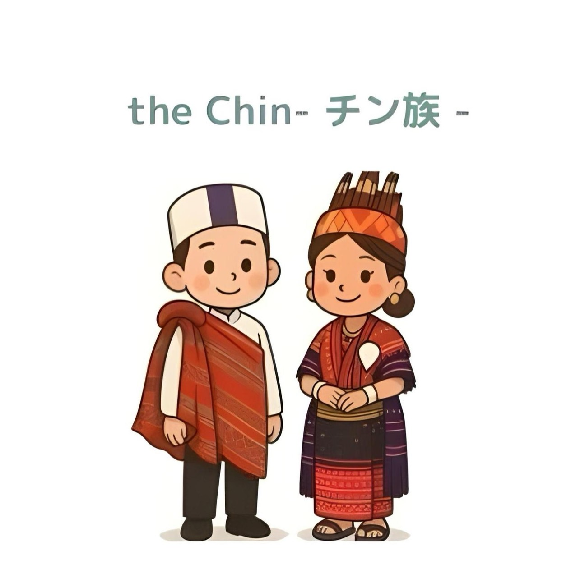

織物と工芸品
チン族の織物は、複雑な模様、鮮やかな色彩、象徴的なモチーフで知られています。 多くの村では伝統的な手織り機が今も使われ、ショール、チュニック、ブランケットが作られています。
- 手織りの綿や絹の生地
- 伝統的なチン族のチュニックやショール
- 文化的象徴を持つ幾何学模様
チン族は、ミャンマー西部高地に広がる多くのサブグループから成り立っています。 精巧な織物、豊かな口承伝統、山岳農業で知られ、 チンのコミュニティは、共有する文化的つながりと並行して、 強い地域的アイデンティティを維持しています。

チン族には、ファラム、ハカ、テディム、ミゾ関連のグループなど、多様なコミュニティが含まれ、それぞれ独自の言語や習慣があります。 多くの人々はビルマ語に加えてチン語を話します。伝統的な生計手段には、棚田農業、織物、丘陵地帯での交易があります。 コミュニティ生活は教会、マーケット、季節ごとの行事を中心に営まれています。
チン族の織物は、複雑な模様、鮮やかな色彩、象徴的なモチーフで知られています。 多くの村では伝統的な手織り機が今も使われ、ショール、チュニック、ブランケットが作られています。
キリスト教が主要な信仰ですが、一部の地域ではキリスト教以前の伝統も残っています。
優雅さと文化的誇りを表す伝統的な衣装：

ミャンマーで3番目に高い山で、独特の動植物が生息。
州都で、景観や文化センターが充実。
涼しい気候と教会が特徴の歴史あるチンの町。
伝統的な祭りや手工芸が楽しめる山間の町。
ナット・マ・タウン国立公園への玄関口。
顔の刺青の伝統と山の景観で知られる町。
山岳の風味と新鮮な地元の食材が特徴の伝統的なチン料理：
チン州周辺で見られる野生動物の例：